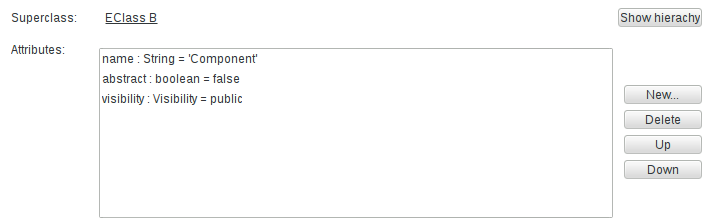

Starting from version 4.0, Sirius supports the definition of properties views with support for many features like complex styling, validation, context etc.
Properties views are defined inside the VSM and identify a sub-set of the elements in the semantic model and associates an element to them in the properties view: it maps semantic elements onto some properties view elements. At runtime, each active properties element (pages, groups, widgets) will produce zero or more elements in the properties view, depending on how many semantic elements currently match the properties element’s definition. Whenever the current selection changes Sirius will automatically re-compute which elements should appear in the properties view according to the active widgets, and create or remove the necessary elements in the properties view.
Note that if you have the (optional) support for Sirius-defined properties views correctly installed but do not specify anything inside your VSMs, Sirius will apply default generic rules to provide a canonical properties view for your model elements. As soon as you specify your own configuration, as described in this document, the default rules will be ignored in favor of yours.
Properties view are configured by creating a Properties View Description element (directly under the Group ) and its sub-elements (which describe the widgets, the actions, the layout...).
Like many elements inside a VSM , View Extension Description have an optional Identifier, which should be unique.
Inside a Properties View Description element, you can create:
It is recommended that the Properties View Description be explicitly associated with the meta-model(s) of the semantic elements it will represent. You can add referenced meta-models from different sources in the Metamodels property section of the Properties View Description. Sirius will work even without this association, but setting it explicitly will give you better feedback when validating your VSM .
The descriptions for all the different types of properties view elements share the same common principles:
Context. Each properties view element is defined in a context in the VSM. At runtime, the corresponding context element would be the semantic element associated to the properties view element description. This context element is used as a starting point to determine which instances of a properties view element description should be created on the properties view:
This order of evaluation should be kept in mind when specifying properties view. In particular, to avoid performance issues you should:
Properties View Elements Definition. Properties views support several different types of properties view elements, which are described in the following sections. These are:
The following attributes are mostly shared by all the properties view element description (page, group, container, widget).
Identifier. Each properties view element description defines an optional attribute Identifier.
Domain Class. The optional
Domain Class attribute is the type of semantic elements which are represented by the properties view element definition. In the
Model Explorer, end-users will be able to create new instances of this diagram on semantic elements of this type (assuming the corresponding viewpoint is enabled in the
Modeling Project). The syntax for the domain class name can be the basic name, like
Package, a qualified name using name of the EMF EPackage which defines the type, like
uml.Package, or a fully qualified URI like
http://www.eclipse.org/uml2/3.0.0/UML#//Package.
By default, new properties view elements can be created on
any instance of the
Domain Class.
Precondition Expression. You can use the
Precondition Expression to change this. If such an expression is specified, it will be evaluated in the
context of the semantic element the user has selected, and only if the expression returns
true will the user be able to create a new diagram on this element.
Label Expression. Is used to compute the text of the label describing the element. The label is specified using the Label expression, which is evaluated in the context of the semantic element and should return a string. If the expression is not specified, the default label is empty.
Help Expression. The help text of a properties view element is specified using the Help expression, which is evaluated in the context of the semantic element and should return a string.
Is Enabled Expression. Each widget can be enabled or disabled (making it visible but read-only) . The Is Enabled Expression is evaluated in the context of the semantic element and should return a boolean. It the expression is not specified it defaults to true (meaing the widget is enabled).
Semantic Candidate Expression. The Semantic Candidate Expression defines the model element represented by the properties view element.
Styles. Each kind of properties view element supports a rich set of possible styles.
To find some documentation for each properties, you can also refer to the tool-tips available directly in the editor on the “question mark” icon of each property.
Here is an example of a widget configuration (a single-line text in this case) which illustrates some of the common attributes:
The
Text Element Name (non-editable) element has the exact same configuration except that its
Label Expression is
Name (read-only): and its
Is Enabled Expression is set to
aql:false.
Here is the resulting properties view rendered for a diagram element:

We see both label expressions on the left of each widget, help icons which show the computed Help Expression when the user leaves the mouse pointer on them, and the actual widgets. The second text widget is disabled (visible thanks to the light blue background) because of its Is Enabled Expression.
A Page is used to represent a Tab in the properties view.

Pages are configured by creating a Page Description element inside a Properties View Description. In the illustration above, the two pages General and Hierarchy have been defined from the VSM. They appear above the standard tabs provided by Sirius ( Semantic, Advanced, etc.).
Much like the other properties view elements, you must specify the Identifier , Domain Class , Precondition Expression , Label Expression , Semantic Candidate Expression .
The definition of a page follows the general rules described above to determine the semantic elements for which a page should be created.
A page can reference
Groups
which are defined directly under the
Properties View Description.
The groups are ordered in the page accordingly to their order in the groups reference list in the VSM.
A Group is used to represent a Section in a properties view tab.

Groups are configured by creating a Group Description element inside a Properties View Description.
Much like the other properties view elements, you must specify the Identifier , Domain Class , Precondition Expression , Label Expression , Semantic Candidate Expression , Styles , Conditional Styles .
The definition of a group follows the general rules described above to determine the semantic elements for which a group should be created.
A group can contain controls and validation rules , all of which are defined inside the group description ( New Group Description > Container|Text... and Group Validation Set Description, respectively).
See the styles section for a general presentation of how styles are defined, including conditional styles. This section only presents the aspects which are specific to groups.
For groups you can define the following style attributes:
TITLE BAR,
SHORT TITLE BAR,
NO TITLE (see the first table below for illusrations of these styles).
TWISTIE,
TREE NODE,
NONE (see the second table below for illusrations of these styles).
The following tables illustrate the different Bar Style and Toggle Style available on groups:

|

|

|
TITLE BAR
|
SHORT TITLE BAR
|
NO TITLE
|
|---|

|

|

|
TWISTIE
|
TREE NODE
|
NONE
|
|---|
Controls represent several different types of containers and widgets, which are described in the following sections.
A widget is used to represent model elements in the properties view. A widget can not contain other properties view elements. Widget can appear directly inside a group description, a dynamic mapping or inside a container, in which case you can specify a specific layout.
The definition of a widget follows the general rules described above to determine the semantic elements for which a widget should be created.
Much like the other properties view elements, you must specify for widgets the Identifier , Label Expression , Help Expression , Is Enabled Expression , Styles , Conditional Styles .
A Text Description is used to represent a one line text in a group or in a container.

A Text Area Description is used to represent a multiple lines text in a group or in a container.

The definition of a text/text area follows the general rules described above to determine the semantic elements for which a text should be created. It is evaluated in the context of the semantic target element.
For texts and text areas, you must define the Value Expression which is used to compute the text displayed in the text field and should return a string. If the expression is not specified, the default value is an empty string.
For text areas, you must define the Line Count which is represents the height of the text area in number of lines.
To define the behavior of the text when a change occurs, you simply specify the behavior associated to the edition inside the Begin element using all the standard model operations.
The expressions defined under the
Begin can use the
newValue variable which represents the value entered by the user.
Sirius automatically invokes the edit operation a short time after the user performs a change in the text or when the focus leaves the widget.
See the styles section for a general presentation of how styles are defined, including conditional styles and widgets styles section to find details on what is specific to widgets. This section only presents the aspects which are specific to texts.
One of the responsibility of texts styles is to describe how text fields will be formated. The following properties are available :
Here are examples of text and text area widgets with some of their style attributes customized:

A Button Description is used to represent a button in a group or in a container.

The definition of a button follows the general rules described above to determine the semantic elements for which a button should be created. It is evaluated in the context of the semantic target element.
For buttons, you must define the
Button Label Expression which is used to compute the label displayed on the button and should return a string. If the expression is not specified, the default value is equal to
DO IT.
To define the behavior of the button when is pushed, you simply specify the behavior associated to the edition inside the Begin element using all the standard model operations.
See the styles section for a general presentation of how styles are defined, including conditional styles and widgets styles section to find details on what is specific to widgets.
A Label Description is used to represent a non editable text in a group or in a container.
Here is an example which shows two label widgets:

The definition of a label follows the general rules described above to determine the semantic elements for which a label should be created. It is evaluated in the context of the semantic target element.
For labels, you must define the Value Expression which is used to compute the text displayed in the description. The Value Expression can return any kind of object but the result displayed will be the result of a call to java.lang.Object#toString(). If you want to customize how the result will be displayed, you can return a String in the value expression or use the Display Expression. The Display Expression will have access to the result of the Value Expression using the variable value and it should return a String. If the expression is not specified, the default value is the empty string.
See the styles section for a general presentation of how styles are defined, including conditional styles and widgets styles section to find details on what is specific to widgets. This section only presents the aspects which are specific to texts.
One of the responsibility of labels styles is to describe how descriptions will be formated. The following properties are available :

A Checkbox Description is used to represent a checkbox in a group or in a container.

The definition of a checkbox follows the general rules described above to determine the semantic elements for which a checkbox should be created. It is evaluated in the context of the semantic target element.
For checkboxes, you must define the Value Expression which is used to compute the checked/unchecked state of the checkbox and so should return a boolean.
To define the behavior of the checkbox when the status changes, you simply specify the behavior associated to the edition inside the Begin element using all the standard model operations.
The expressions defined under the
Begin can use the
newValue variable which represents the value set by the user.
See the styles section for a general presentation of how styles are defined, including conditional styles and widgets styles section to find details on what is specific to widgets.
A Select Description is used to represent a combo in a group or in a container.

The definition of a select follows the general rules described above to determine the semantic elements for which a select should be created. It is evaluated in the context of the semantic target element.
For selects, you must define :
candidate variable which represents the element currently evaluated.
To define the behavior of the select when the selection changes, you simply specify the behavior associated to the edition inside the Begin element using all the standard model operations.
The expressions defined under the
Begin can use the
newValue variable which represents the value selected by the user.
See the styles section for a general presentation of how styles are defined, including conditional styles and widgets styles section to find details on what is specific to widgets.
A Radio Description is used to represent a radio group in a group or in a container.

The definition of a radio group follows the general rules described above to determine the semantic elements for which a radio group should be created. It is evaluated in the context of the semantic target element.
For radio groups, you must define :
candidate variable which represents the element currently evaluated.
To define the behavior of the radio group when the selection changes, you simply specify the behavior associated to the edition inside the Begin element using all the standard model operations.
The expressions defined under the
Begin can use the
newValue variable which represents the value selected by the user.
See the styles section for a general presentation of how styles are defined, including conditional styles and widgets styles section to find details on what is specific to widgets.
A Hyperlink Description is used to represent an hyperlink in a group or in a container.

The definition of an hyperlink follows the general rules described above to determine the semantic elements for which an hyperlink should be created. It is evaluated in the context of the semantic target element.
For hyperlinks, you must define the Value Expression which is used to compute the hyperlink displayed. The Value Expression can return any kind of object but the result displayed will be the result of a call to java.lang.Object#toString(). If you want to customize how the result will be displayed, you can return a String in the value expression or use the Display Expression. The Display Expression will have access to the result of the Value Expression using the variable named value and it should return a String.
To define the behavior of the hyperlinked when is clicked, you simply specify the behavior associated to the edition inside the Begin element using all the standard model operations.
See the styles section for a general presentation of how styles are defined, including conditional styles and widgets styles section to find details on what is specific to widgets. This section only presents the aspects which are specific to hyperlinks.
One of the responsibility of hyperlinks styles is to describe how hyperlinks will be formated. The following properties are available :
A Reference Description is used to represent a field with buttons in a group or in a container.
Depending on the parameters configuration the reference widget can be represented thanks to:

The illustration above shows two reference widgets:
The definition of a reference follows the general rules described above to determine the semantic elements for which a reference should be created. It is evaluated in the context of the semantic target element.
For references, you must define:
value which corresponds to the element to display.
If the On Click Expression is set then:
To define the behavior, you simply specify the behavior associated to the edition inside the Begin element using all the standard model operations.
The expressions defined under the
Begin can use the
selection variable which represents the values selected by the user. It could be at least one element or a list of elements in case of multiple flags is checked.
A reference can contain actions which represent buttons associated to the reference field, as shown in the illustration above.
For actions, you must define the
Label Expression which is used to compute the label displayed on the button and should return a string. If the expression is not specified, the default value is equal to
....
To define the behavior of the button when is pushed, you simply specify the behavior associated to the edition inside the Begin element using all the standard model operations.
The expressions defined under the
Begin can use the
selection variable which represents the values selected by the user in the reference field.
See the styles section for a general presentation of how styles are defined, including conditional styles and widgets styles section to find details on what is specific to widgets.
A List Description is used to represent a table with buttons in a group or in a container.
Depending on the parameters configuration the list widget will be represented thanks to a table and multiple buttons when Action Widgets are defined.
The definition of a list follows the general rules described above to determine the semantic elements for which a list should be created. It is evaluated in the context of the semantic target element.
For lists, you must define:
value which corresponds to the element to display.
If the
On Click Expression is set then this expression defines the behavior executed when the user clicks or double-clicks on an element in the table. A variable named
onClickEventKind will be available to determine if the expression has been triggered by a single click or double click. In case of a single click, the variable will have the value “SINGLE_CLICK” and “DOUBLE_CLICK” in case of a double click.
To define the behavior, you simply specify the behavior associated to the edition inside the Begin element using all the standard model operations.
The expressions defined under the
Begin can use the
selection variable which represents the values selected by the user. This variable will contain the list of the values selected.
A list can contain actions which represent buttons associated to the list field.
For actions, you must define the
Label Expression which is used to compute the label displayed on the button and should return a string. If the expression is not specified, the default value is equal to
....
To define the behavior of the button when is pushed, you simply specify the behavior associated to the edition inside the Begin element using all the standard model operations.
The expressions defined under the
Begin can use the
selection variable which represents the values selected by the user in the list field.
See the styles section for a general presentation of how styles are defined, including conditional styles and widgets styles section to find details on what is specific to widgets.
A
Custom Description is used when none of the predefined styles correspond to your need. Custom style are implemented in Java and use the
org.eclipse.eef.ide.ui.eefLifecycleManagerProvider extension point.
The definition of a custom widget follows the general rules described above to determine the semantic elements for which a custom widget should be created. It is evaluated in the context of the semantic target element.
For custom widgets, the Identifier is mandatory. It is used to find the widget contributed with the extension point.
When you define a custom widget, it is possible to define some custom expression or operation which will be used by the custom widget implementation.
In this case, the
Identifier is mandatory. It would be used in the Java code to find the expression/operation contributed with the VSM.
See the styles section for a general presentation of how styles are defined, including conditional styles and widgets styles section to find details on what is specific to widgets. This section only presents the aspects which are specific to texts.
A dynamic mapping is used to represent model elements of the same type with the same widget in the properties view. A dynamic mapping can contain widgets.
A
Dynamic Mapping For can appear directly inside a group description, or inside a
container, in which case you can specify a specific
layout. You must specify an
Iterable Expression which computes a list of elements. An
Iterator must be define to be able to access the different element of the list thanks to a variable.
Sirius will loop on the element list to try to apply the
Predicate Expression which should return a boolean and defined in a
Dynamic Mapping If.
The
Dynamic Mapping If contains
one widget which represents all the elements selected by the previous predicate.
The dynamic mapping mechanism is the one used by Sirius to provide by default properties view even if you do not specify any
Properties View Description in your VSM.
If we take one of the default rules implemented by Sirius we have:
aql:self.eClass().eAllStructuralFeatures which means get all the structural features available for the current eClass.
eStructuralFeature.
aql:eStructuralFeature.eType.instanceTypeName = 'java.lang.String' which means that we just keep the structural features serialized as a String. Notice that in the predicate expression we use the variable
eStructuralFeature which was defined as the
Iterator.
aql:eStructuralFeature.name.toUpperFirst() + ':' which means get the name of the structural feature, capitalize the first letter and add
: at the end.
aql:self.eGet(eStructuralFeature) which means get the value associated to the given structural feature.
Thanks to this mechanism we defined that all the
String elements in our metamodel will be represented with a text field.
Sirius provides a default algorithm to perform an automatic layout of all the controls in a properties view. If the default algorithm does not fit your needs, you can specify some parameters for alternate layouts directly inside the VSM.
Fill layout can organize elements inside the container either horizontally or vertically (configurable on the Fill layout element).
Grid layout can organize elements using a fixed number of column (configurable on the Grid layout element), which can optionally be made to all have the same width.
Styles define the graphical appearance of properties view elements. Sirius supports a rich set of possible styles, including
conditional styles which can dynamically change depending on the current state of the underlying model elements. If no style is defined a default style is applied by Sirius.
It is possible to re-define the default style by creating a style under the properties view element description.
One of the responsibility of widgets styles is to describe how labels will be formated. The following properties are available :

Whenever you have to specify colors for a style, you can use either one of the pre-defined system colors or one which you have defined yourself in a Users Color Palette. See the general section on colors for more details.
Conditional styles make it possible to support different graphical aspects for a single properties view element. The actual style used to render an element is determined dynamically depending on the current state of the models elements.
To use conditional style, you must add one or several conditional styles. Each conditional style is associated to a condition specified as a predicate. If there are conditional styles on a properties view element, their conditions are tested in their order of appearance in the description. The first one for which the condition is true is selected. If none of the conditional styles condition is true, the default style is used instead.
There are three kind of validation rules that can be specified. The main difference between the various kind of validation rules available is the location of the validation messages (on a page, a group or a widget). All the validation rules can contains audits used to determine if the validation rule has been broken thanks to an
auditExpression which should return a boolean indicating if the validation of the rule is a success. The validation rules can also contain fixes in order to fix the issue found. Those validation fixes have a name and a fix expression which will be executed once the end user selects a quick fix. The fix expression does not have to return anything. All of those expressions have access to the variables
self, the result of the semantic candidate expression of the page or group and
input the input of the view.
The page semantic validation rule is used to define a validation rule linked to a page.
The group semantic validation rule is used to define a validation rule linked to a group.
The group property validation rule is used to define a validation rule linked to a specific widget.